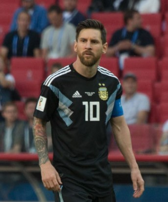
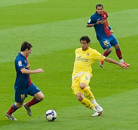
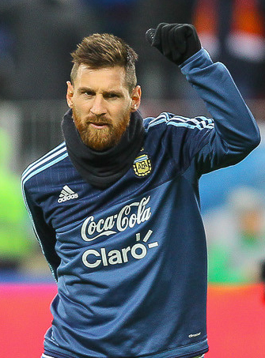

Lionel Messi
Lionel Messi was born on June 24th, 1987, in Rosario, Argentina. His paretns were in the working class as his mother was a cleaner and his father was a steel worker. He started playing soccer from a very young age, he was very talented except something came up. At age 11, he was diagnosed with growth hormone deficiency, its a condition that stops growth and requires expesive drugs in order to fix it. This is why today Messi is only 5'7.
Teenage Years
He needed money for treatment so he tried to get his towns biggest club to let him play and under contract pay for his medical bills, sadly they denied. Although, Messi looked for other options. Barcalona offered him a trial and they were extremely impressed. They offered him a contract and within it they would pay for his medical bills if Messi played on the Barcalona academy team.
Messi gets put on senior team
Messi rose through the ranks and was given a shot at playing in the 2004/2005 season. He scored a goal and he was the youngest player in the world to score at only age 18. He scored more and more and became a more usual starter, in only his second year on the Barcalona senior team he won the Champions league!
Messi just kept getting better as he was scoring 30 plus or 40 plus goals per season and getting more and more fame. Eventually he set a new record in a perfect season by scoring 91 goals, the record he beat was only 70. He was the best in the world.
The best in the world
Messi and Ronaldo are considered the two best and they have for decades now. Currently both sitting at around 700 career goals and 5 best player in the world awards each. Its a rivarly that inspires. They are both the best players in the world.